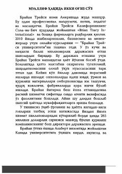

MBMillioner bo'lish sirlari va moliyaviy muvaffaqiyatga erishish yo'riqnomasi.
Ushbu kitobda noldan boshlab millioner bo'lish sir-asrorlari va moliyaviy muvaffaqiyatga erishish yo'llari haqida so'z boradi. Muallif o'z hayotiy tajribasi va kuzatishlariga tayanib, boylik orttirish va fikrlash tarzini o'zgartirish bo'yicha amaliy maslahatlar beradi.